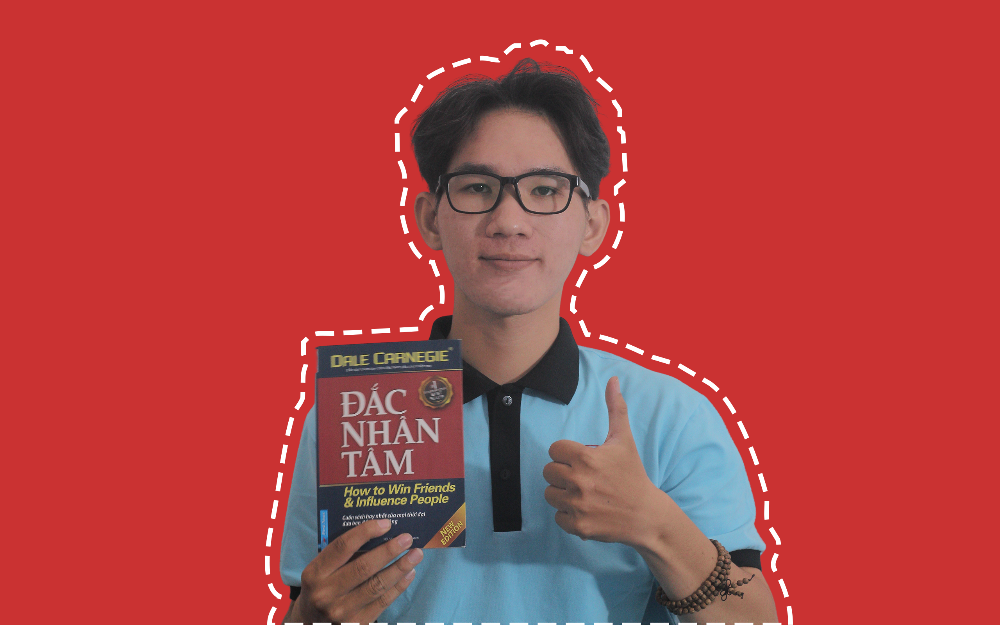
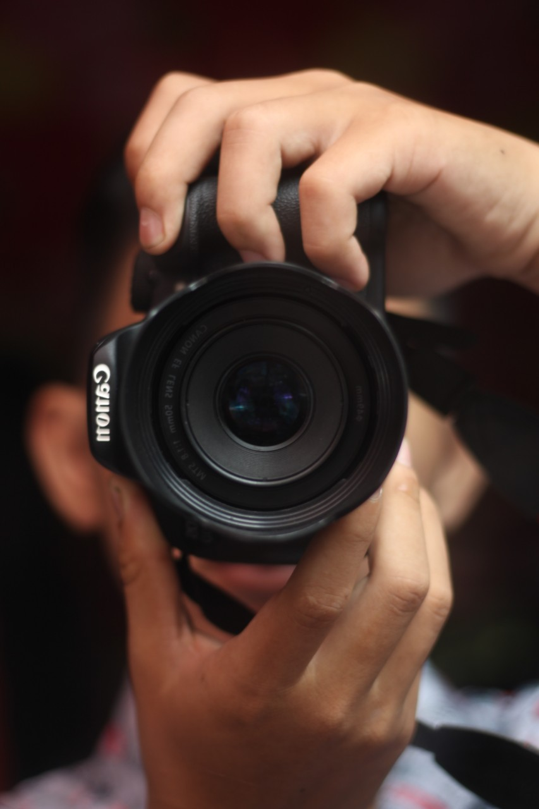
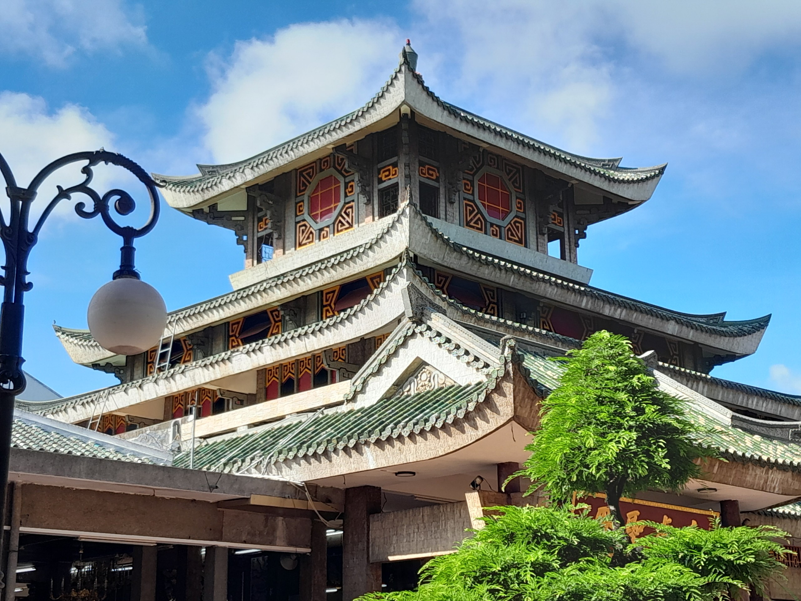
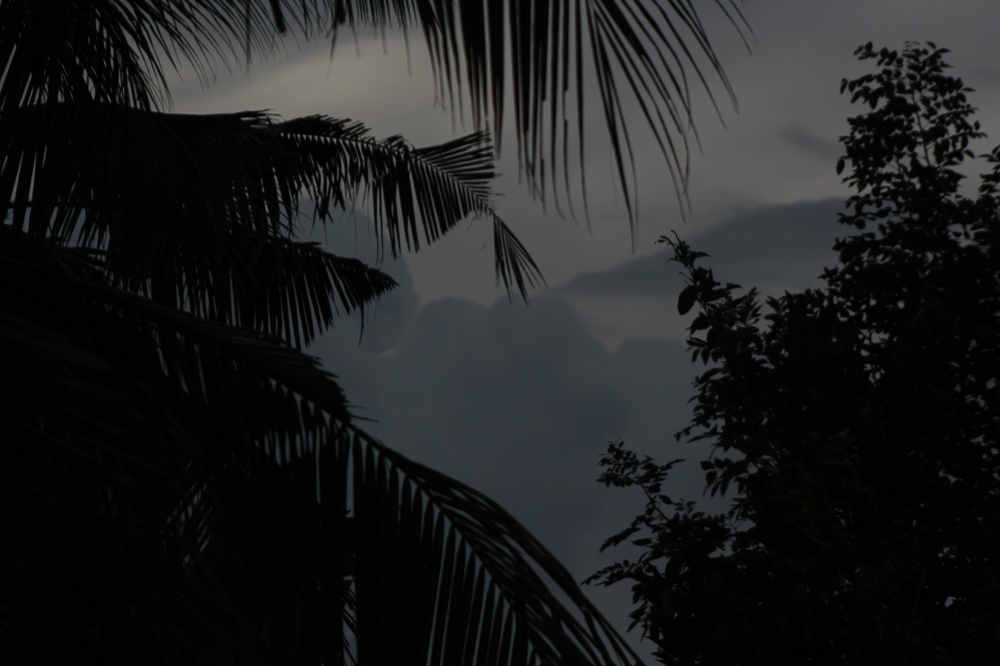

- 
Giới thiệu về Tôi
-
Chào mừng bạn đến với trang web cá nhân của tôi! Tôi là Long, là một sinh viên đam mê sáng tạo và khám phá, tôi luôn tìm kiếm những cơ hội để phát triển bản thân và chia sẻ kiến thức với cộng đồng.
-
-
Sở thích và
đam mê -
Tôi yêu thích chụp ảnh và
cài đặt Windows mỗi ngày.
Những trải nghiệm này
không chỉ làm phong phú
thêm cuộc sống của tôi mà
còn cung cấp nguồn cảm
hứng cho công việc của tôi.
Mỗi bức ảnh tôi chụp đều
kể một câu chuyện và mỗi
lần cài đặt Windows đều
mang đến cho tôi những
bài học mới về công nghệ.
-
-
- 
- 
- 
-
Mục tiêu
-
Mục tiêu của tôi là trở thành một lập trình viên Fullstack Developer, đồng thời phát triển kỹ năng chụp ảnh để ghi lại những khoảnh khắc đẹp trong cuộc sống. Tôi hy vọng có thể chia sẻ những kiến thức và trải nghiệm của mình với mọi người, từ việc xây dựng ứng dụng web đến việc tạo ra những bức ảnh ấn tượng.

-
Liên hệ
-
Nếu bạn muốn kết nối hoặc có bất kỳ câu hỏi nào, hãy liên hệ với tôi qua email hoặc mạng xã hội. Tôi rất mong nhận được phản hồi từ bạn! Cảm ơn bạn đã ghé thăm trang web của tôi! Bạn có thể điều chỉnh thêm để phù hợp hơn với phong cách cá nhân của mình. Chúc bạn thành công với trang web!
Email: nguyeenhuynhlong@gmail.com
Facebook: Nguyễn Huỳnh Long